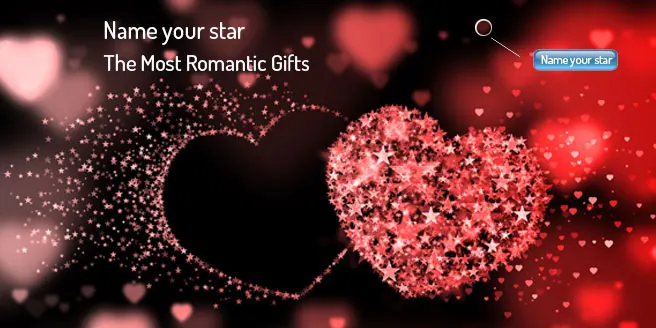
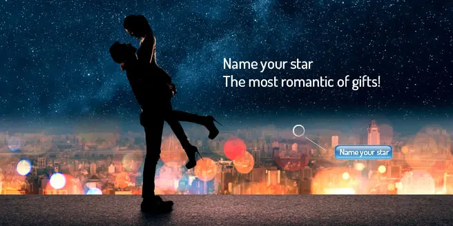
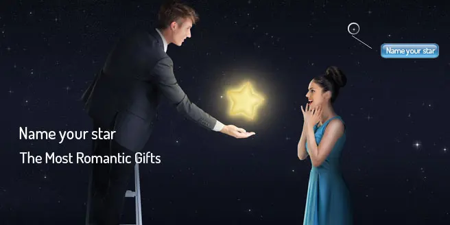
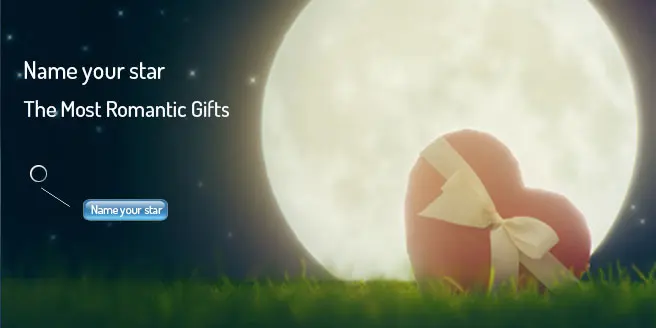

UNA STELLA PER TE! GIVEAWAY

Stella: Cosa c'è di più dolce nel guardare le stelle insieme alla persona che si ama di più?
Cosa c'è di più dolce nel guardare le stelle insieme alla persona che si ama di più?

E se alzando gli occhi al cielo potreste indicare, come una splendida sorpresa di San Valentino, una stella dedicata al vostro amore?
Un regalo unico e personalizzato
Io oggi vi propongo di creare un'atmosfera magica la sera di San Valentino.

Potrete personalizzare la stella scegliendo la costellazione in base al segno zodiacale.
Battezza il vostro punto e firma il cielo con il vostro nome.

Regalo più unico e romantico credo non esista.
ATTENZIONE: Cliccando QUI potrete partecipare direttamente al concorso e provare a vincere una stella digitale nella costellazione CYGNO.
Per tutte le regole ed info andate sulla pagina Il Mondo di Baby Pepita.
Poesia:
Tutta la materia di cui siamo fatti noi l’hanno costruita le stelle,
tutti gli elementi dall’idrogeno all’uranio sono stati fatti nelle reazioni nucleari
che avvengono nelle supernove, cioè queste stelle molto più grosse del Sole
che alla fine della loro vita esplodono e sparpagliano nello spazio il risultano di tutte le reazioni nucleari avvenute al loro interno.
Per cui noi siamo veramente figli delle stelle.
(Margherita Hack)